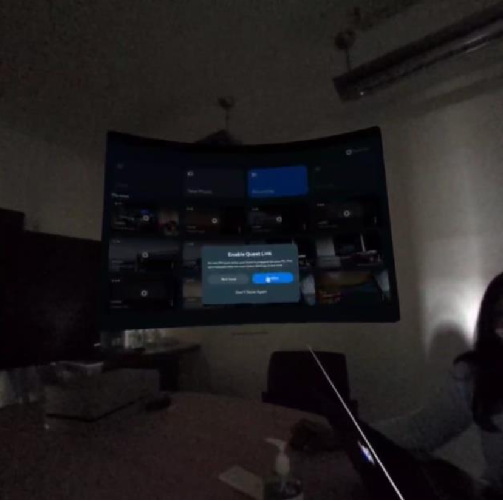
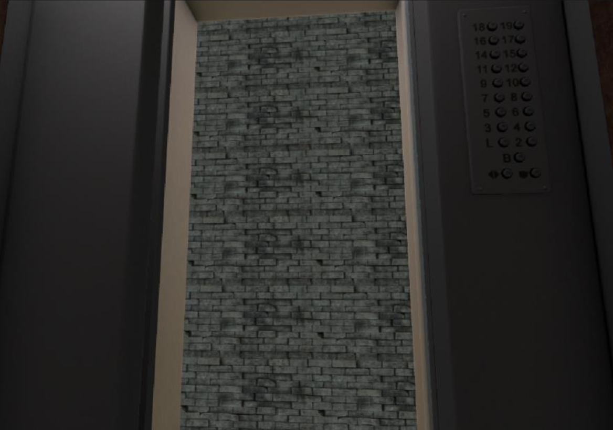
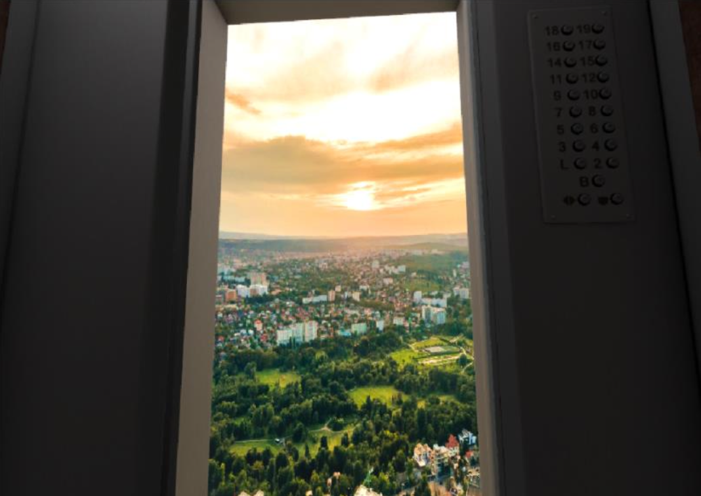
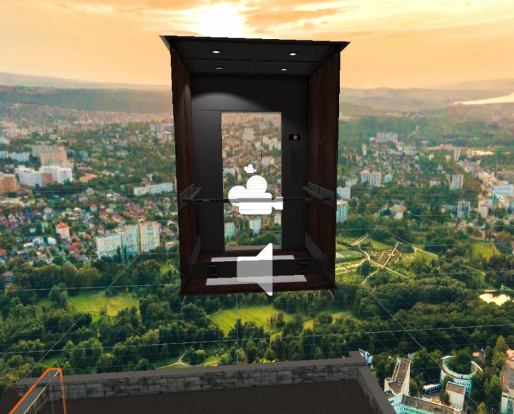

Experience Design
Designed an elevator experience that uses fear of heights as the emotional trigger, with carefully
choreographed moments building from confined safety to overwhelming exposure.
Design Concept
An elevator journey that starts in a small, safe space and gradually reveals extreme height, using the
contrast between confined and open space to maximize emotional impact.
Experience Flow

01. Establish Baseline
User sits in dimly lit elevator. Familiar, enclosed space creates initial comfort and grounding before the experience begins.
Design Decision: Match real chair with virtual seat for seamless physical-virtual alignment

02. Build Anticipation
Slow upward movement with mechanical sounds. Moving brick walls provide elevation cues without revealing destination.
Design Decision: Visual-vestibular conflict enhances height sensation through motion parallax

03. Dramatic Reveal
Doors open to 360-degree cityscape from extreme height. Sudden transition from confined to infinite space creates peak emotional moment.
Design Decision: Real city panorama photos for authentic depth perception and scale

04. Loss of Control
Camera autonomously moves into open air. User experiences out-of-body sensation as system takes control during peak fear.
Design Decision: Autonomous movement removes user agency, paradoxically increasing immersion

Unity development environment showing 3D scene construction and camera positioning